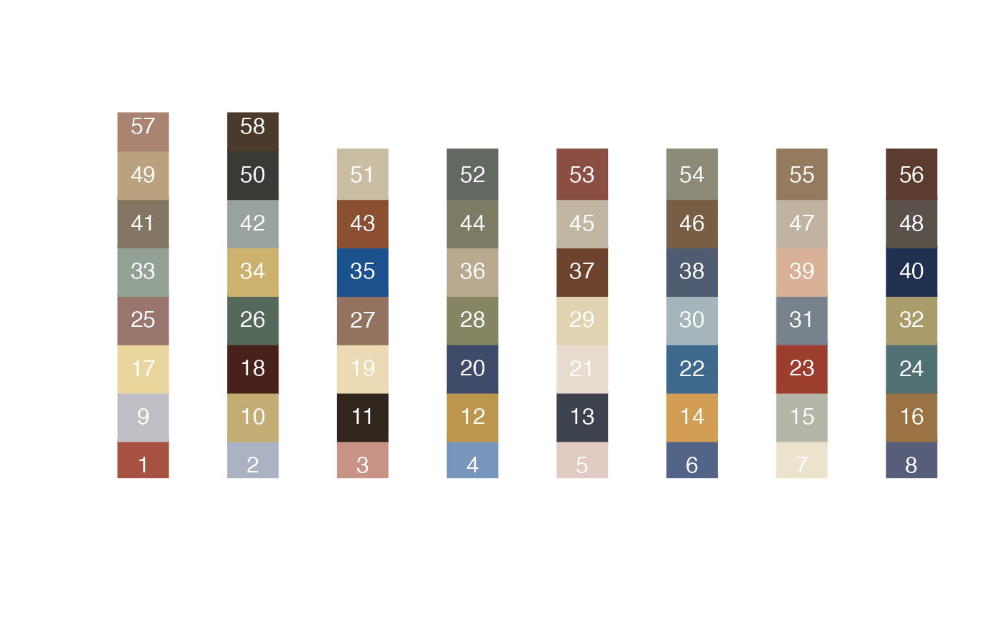

Get some nice colours
getColours(Ncols, continuous = FALSE, Dcols = c(0, 1))Arguments
- Ncols
Either an integer representing the number of requested colours, or, a numeric vector of integers between 1-58 to select specific colours. Run
getColours()without arguments to see a plot of the colours that are available.- continuous
Return a discrete vector of colours, or, a function that represents a gradient between 2 or more colours? If
TRUEthen argumentNcolsmust be a numeric vector greater than length2. NOTE: The input to the gradient function must be (re-)scaled to fall between 0 and 1, e.g. usingelascer(). (default =FALSE)- Dcols
If
continuousis set toTRUE, this should be a vector of the same length asNcolsrepresenting the relative distances between the colours in the gradient function using values between 0 and 1. (default =c(0,1))
Value
A list of colours
Examples
# This will plot all available colours with their numbers
getColours()

#> NULL
# Get a specific number of colours
getColours(5)
#> [1] "#A65141" "#ABB2C4" "#C89284" "#7896BC" "#E1CAC2"
# Get specific colours
getColours(c(4,7,1,40))
#> [1] "#7896BC" "#ECE3CD" "#A65141" "#20304F"
# Make a gradient from colour number 4 to 44 via 7
gradFunc <- getColours(Ncols = c(4,7,44), continuous = TRUE, Dcols = c(0,.5,1))
df <- data.frame(x=1:50, y=sort(rnorm(50)))
# Make sure the input is on a scale of 0-1
df$ycol <- elascer(df$y)
library(ggplot2)
ggplot(df, aes(x=x,y=y,colour=ycol)) +
geom_point() +
scale_colour_gradientn("Gradient",colours = gradFunc(df$ycol)) +
theme_bw()
 # Make a gradient from colour number 4, to 9, to 7, to 36, to 44
gradFunc <- getColours(Ncols = c(4,9,7,36,44), continuous = TRUE, Dcols = c(0,.33,.5,.66,1))
ggplot(df, aes(x=x,y=y,colour=ycol)) +
geom_point() +
scale_colour_gradientn("Gradient",colours = gradFunc(df$ycol)) +
theme_bw()
# Make a gradient from colour number 4, to 9, to 7, to 36, to 44
gradFunc <- getColours(Ncols = c(4,9,7,36,44), continuous = TRUE, Dcols = c(0,.33,.5,.66,1))
ggplot(df, aes(x=x,y=y,colour=ycol)) +
geom_point() +
scale_colour_gradientn("Gradient",colours = gradFunc(df$ycol)) +
theme_bw()